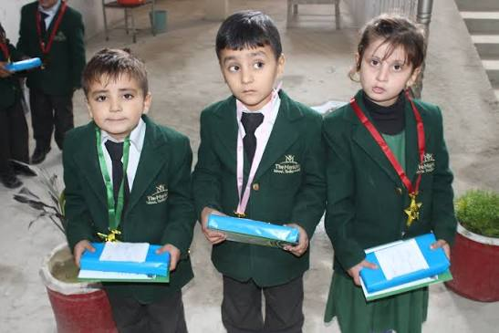

A PSRA-registered institution committed to early-childhood excellence in Tordher, Swabi.
The Meridian School Tordher is an active private educational institution officially registered under the Private Schools Regulatory Authority (PSRA) of Khyber Pakhtunkhwa, Swabi District.
Located on Main Road Tordher, our school serves families across the region with a specialized focus on foundational and early-childhood education. We offer Playgroup through Class 5 for both boys and girls in a safe, nurturing, and academically rich environment.
Our approach blends modern, activity-based teaching methods with the timeless values of discipline, respect, and moral character — preparing children not just for exams, but for life.

To provide a joyful, safe, and academically enriching environment where every child develops confidence, curiosity, and a lifelong love of learning.
To be the most trusted early-learning institution in Swabi District — recognized for excellence in foundational education and character building.
Discipline, respect, honesty, compassion, curiosity, and a strong sense of community — the pillars on which every Meridian student stands.